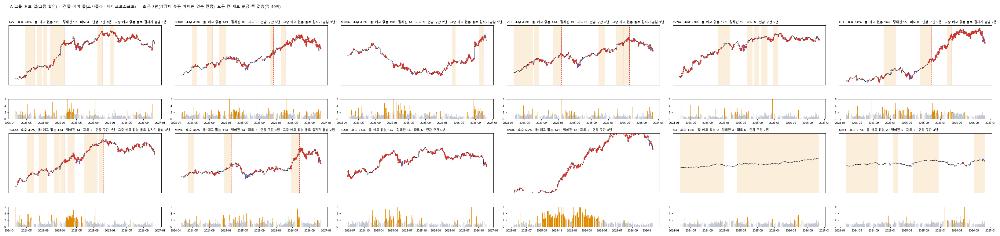

그림 확인 — A 그룹 후보 (첫 묶음 열 명)
뉴팩트 개성 있는 아이 찾기 게임 · 설정 = 최근 3년 · 20일 간격 · 평범 80%(아이의 80% 가 평범, 개성 20% 를 센 순서대로 A · B · C 삼등분) · 칸 넷. 이 설정에서 A 로 나온 32명 중, 그림 확인 전이던 아이를 위에서부터 열 명. 상장 3년이 안 된 아이(레딧 · 샌디스크)도 빼지 않고 있는 만큼 봅니다. 2026-11-24.
그림

모든 칸의 세로 눈금 폭이 같습니다(위아래 약 40배). 빨강 점 = 예고 없는 돌(실적 · 파도 날이 아닌 ±5%) · 회색 = 정해진 돌(실적) · 파랑 = 파도 날의 돌 · 노란 띠 = 1년 고점 근처에 머문 구간 · 아래 = 거래량(평소의 몇 배). 오른쪽 아래 둘(코카콜라 · 마이크로소프트)은 견주려고 놓은 아이입니다.
Claude 가 그림에서 본 것
| 아이 | 본 것 |
|---|---|
| 앱러빈 APP | 3년 내내 돌이 빽빽. 크게 오른 뒤에도 그대로 |
| 코히런트 COHR | 3년 내내 돌이 빽빽 |
| 모더나 MRNA | 내려갈 때도 올라올 때도 돌이 이어짐. 거래량이 몰리는 때가 있음 |
| 버티브 VRT | 3년 내내 돌이 빽빽 |
| 카바나 CVNA | 3년 내내 돌이 빽빽 |
| 루멘텀 LITE | 앞 1년은 듬성듬성, 뒤 2년은 빽빽. 코히런트와 그림 모양이 닮음(같은 광통신) |
| 로빈후드 HOOD | 3년 내내 돌이 빽빽. 2025 초에 거래량이 길게 몰림 |
| 마벨 MRVL | 3년 내내 돌이 있음. 2026 여름에 몰림 |
| 레딧 RDDT | 2024-03 상장 뒤 내내 돌이 빽빽 |
| 샌디스크 SNDK | 2025-02 상장 뒤 내내 돌이 빽빽. 크게 올라 그림 위쪽이 잘림. 2025 가을 ~ 2026 봄에 거래량이 길게 몰림 |
열 명 모두 코카콜라 · 마이크로소프트(가늘고 매끈한 선)와 한눈에 다릅니다. 루멘텀과 코히런트는 서로 닮아 단체(D)일 수 있는데 정하지 않았습니다.